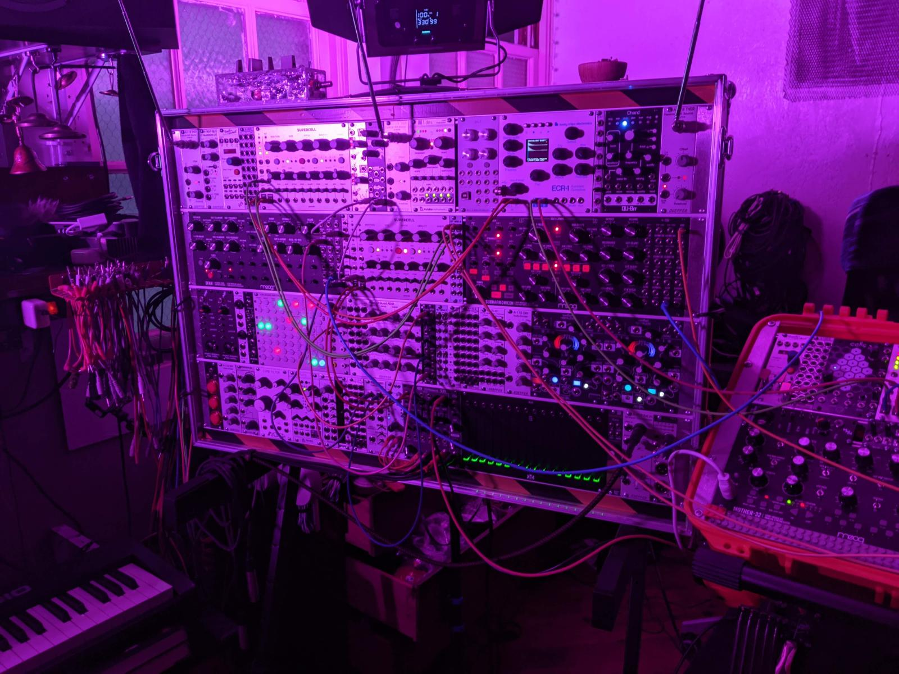

I came to signal processing through composition and wanting to realize my own works. A BA and MM in music composition led to a PhD in computer music with a dissertation on periodicity transforms in discrete-time audio. That work sits at the border of mathematics and listening and it's where I still spend most of my time.
I'm a practicing composer and performer. My music has been played by ensembles including Inverted Space, the JACK Quartet, and the Seattle Chamber Players, in places as varied as the National Gallery of Art and Radiophrenia in Scotland. Alongside that practice, I've spent years consulting on audio and signal-processing problems for other artists and institutions including writing real-time systems, redesigning electronics for existing works and building software that didn't exist until someone needed it.

This has included collaborative work with composers such as Roger Reynolds and Alvin Lucier, performances with red fish, blue fish, and projects alongside percussionist Steven Schick. That same background has also led to research on brain-computer musical interfaces (published in Frontiers in Human Neuroscience) and spatialization algorithms (published in IEEE), and to consulting work on EEG research more broadly.
One thing I won't take on: studio recording, mixing, and mastering. Everything else, I'm probably interested in hearing about. The weirder the better.